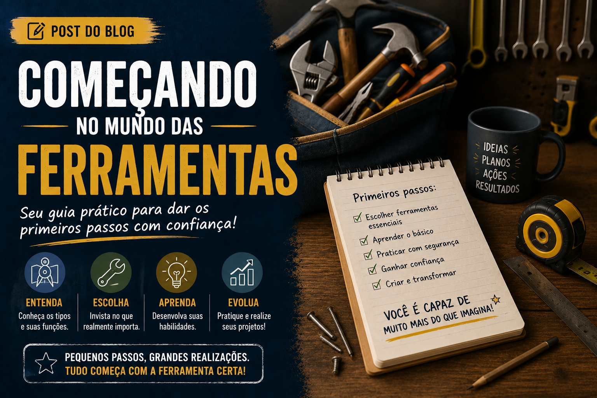

Ferramentas
Ferramentas manuais que todo profissional deve ter
As ferramentas manuais são indispensáveis para qualquer profissional. Conheça os principais itens que não podem faltar na sua caixa de ferramentas e descubra como eles facilitam o trabalho no dia a dia.